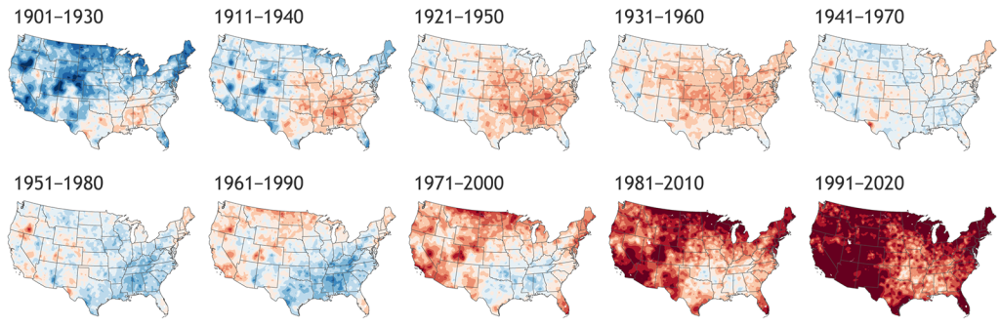

| SW | CW | Date | |
|---|---|---|---|
| Vector Deepdive (Nils Ratnaweera) | |||
| Tutorial (in person) | 1 | 8 | 2026-02-17 |
| Task (async), due: 2026-03-02 | 2 | 9 | 2026-02-24 |
| Raster Deepdive (Nils Ratnaweera) | |||
| Tutorial (in person) | 3 | 10 | 2026-03-03 |
| Task (async), due: 2026-03-16 | 4 | 11 | 2026-03-10 |
| Web Mapping (Nils Ratnaweera) | |||
| Tutorial (in person) | 5 | 12 | 2026-03-17 |
| Interpolation and Density Estimation (Patrick Laube) | |||
| Theory (in person) | 6 | 13 | 2026-03-24 |
| Task (async), due: 2026-04-06 | 7 | 14 | 2026-03-31 |
| Network Analysis (Patrick Laube) | |||
| Theory (in person) | 8 | 15 | 2026-04-07 |
| Task (async), due: 2026-04-20 | 9 | 16 | 2026-04-14 |
| Movement Analysis I (Patrick Laube) | |||
| Theory (in person) | 10 | 17 | 2026-04-21 |
| Task (async), due: 2026-05-04 | 11 | 18 | 2026-04-28 |
| Movement Analysis II (Patrick Laube) | |||
| Theory (in person) | 12 | 19 | 2026-05-05 |
| Task (async), due: 2026-05-18 | 13 | 20 | 2026-05-12 |
| Oral Review (Nils Ratnaweera) | |||
| In Person | 14 | 21 | 2026-05-19 |
Spatiotemporal Datascience
Bachelor ADLS / FS26
Welcome

This course is taught in the Bachelor Degree Applied Digital Life Sciences at the Zurich University of Applied Sciences (ZHAW).
In this course, we will learn about methods and tools to analyze spatiotemporal data. We expect that you already have had some experience with spatial data and programming. To start the course, we will recap the following topic from the course GISc and Geodatabases: Geocomputation with R with raster and vector data